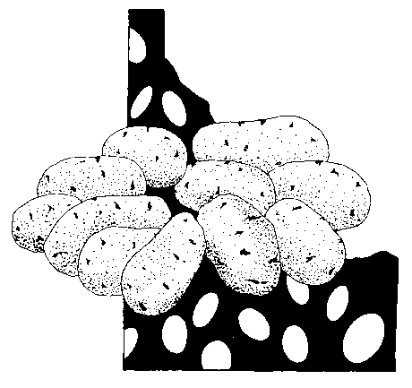

Click HERE to read truly delightful Yiddish folksongs about potatoes.
And HERE to read Antoine Parmentier's entire amazing history.
And HERE to read Richard Wilbur's fairly self-indulgent rap on the lowly "Potato."
"'You left us in tatters
without shoes or socks,
Tired of digging potatoes,
and spudding up docks;
And now you've gay bracelets
and bright feathers three!'
'Yes: that's how we dress
when we're ruined,'
said she."
--Thomas Hardy, The Ruined Maid
She washes potatoes--
If I could be Saigyo,
I'd write her a song
--Matsua Basho (1644-1694), from Travelogue of Weather--Beaten Bones
"What I say is that, if a man really likes potatoes, he must be a pretty decent sort of fellow."
--A.A. Milne in Not That It Matters
"Potato: bland, amiable, and homely, an honest vegetable, giving honour where honour is due--in honest soup."
--Della Lutes in The Country Kitchen
§ Home § Search § FoodTales § Any comments?
Potatoes
(Solanum tuberosum)
Indigenous to Central and South America, potatoes were probably first domesticated in Chile. They were discovered by Europeans when Pizarro destroyed the Incan empire in Peru--and were brought back to Europe around 1570. From Spain they moved to England and Ireland--it's said that Sir Walter Raleigh introduced them in 1586, but they were popular by 1610.
Some, however, resisted them as a food for a long time. Until 1780, they were rigorously excluded from prudent French tables, as they were thought to cause leprosy. Devout Scotch Presbyterians refused to eat them because they weren't mentioned in the Bible. In Prussia, King Frederick William I threatened to cut off the noses and ears of all peasants who refused to plant them. Russian peasants considered them unclean and un-Christrian, calling them Devil's apples. In colonial Massachusetts, they were considered the spoor of witches.
Ireland adopted the potato first, and even made it the foundation of its national diet--a fact that was to have terrible repercussions in 1845 when a late blight attacked the potato crop and caused the famine that was to send Irish emigres all over the world seeking a better life.
In France, potatoes were finally established during the famine following the Seven Years' War (1756-1763). Frenchman Antoine August Parmentier, who was fed potatoes in a prisoner-of-war camp in Germany, returned to France to find his countrymen starving. He set up potato-soup kitchens throughout Paris to assist the poor, and Louis XVI recognized his work by saying, "France will thank you some day for having found bread for the poor." In fact, he is recognized in a most appropriate way--by the famous potato soup Potage Parmentier. Interestingly, Ben Franklin dined at Parmentier's home--and was treated to course after course of potato-based dishes, up to and including a potato-based after-dinner liqueur.
Potatoes were introduced to Corsica by local hero, freedom fighter, and reformer Pascal Paoli around 1763. For his troubles, he was promptly dubbed General delle patate by his enemies"--a name that was meant to be invidious because of the fear of its poisonous qualities.
In his hilarious libretto to Patience (1881), W. S. Gilbert set these words to Sullivan's score: "Then a sentimental passion--of a vegetable fashion--must excite your languid spleen--An attachment a la Plato--for a bashful young potato, or a not too French French bean!"
Potatoes arrive in the United States, variously, from the West Indies in 1613 and from Ireland in 1719. Russian fur traders brought potatoes to Alaska from Siberia as early as 1783. By 1890, they'd become an industry in Maine, helped along by the railroad that was built to harvest lumber. In late 20th century America they reached the front page as a word surprisingly difficult for then Vice President Dan Quayle to spell.